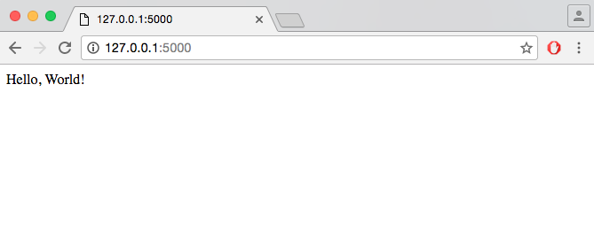
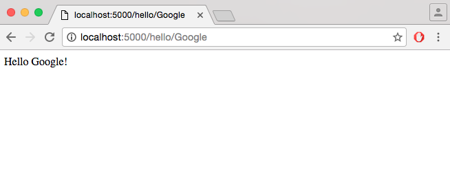
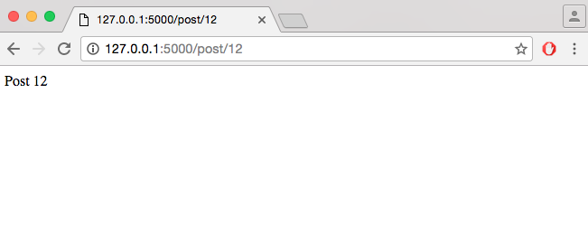
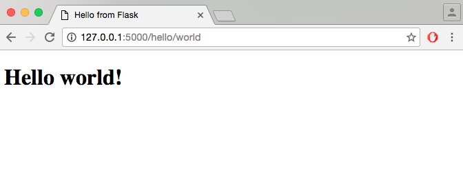

A Python framework for building web applications (sites, blogs, wiki, etc.)
Flask provides you with tools, libraries, and technologies that allow you to build a web application
Flask depends on some external libraries (Werkzeug and Jinja2)
Werkzeug is a toolkit for the standard Python interface between web applications and a variety of servers for both development and deployment
Jinja2 renders templates
Using virtualenv
Virtualenv enables multiple side-by-side installations of Python, one for each project
It helps to keep different project environments isolated
On each project you can work with different versions of Python itself and Python libraries
$ sudo pip install virtualenv$ sudo apt-get install python-virtualenvFirst install pip and setuptools
See instructions here
Upgrade pip and install virtualenv
$ pip install --upgrade pip setuptools$ pip install virtualenvFire up a shell and give the following commands
Create a project and change directory
$ mkdir app$ cd app$ virtualenv venvon Mac OS X or Linux
$ . venv/bin/activateon Microsoft Windows
$ venv\scripts\activate$ pip install Flask$ deactivatefrom flask import Flask
app = Flask(__name__)
@app.route('/')
def hello_world():
return 'Hello, World!'
if __name__ == '__main__':
app.run(debug = True)$ cd ./app
$ export FLASK_APP=hello.py
$ flask run
* Running on http://127.0.0.1:5000/
<variable_name> or <converter:variable_name>@app.route('/hello/')
@app.route('/hello/<name>')
def hello_name(name):
return 'Hello %s!' % name
@app.route('/post/<int:post_id>')
def show_post(post_id):
# show the post with the given id, the id is an integer
return 'Post %d' % post_id
@app.route('/projects/')
def projects():
return 'The project page'
@app.route('/about')
def about():
return 'The about page'Flask can also generate URLs
To build a URL to a specific function you can use the url_for() function
url_for() accepts the name of the function as first argument and a number of keyword arguments, each corresponding to the variable part of the URL rule
>>> from flask import Flask, url_for
>>> app = Flask(__name__)
>>> @app.route('/')
... def index(): pass
...
>>> @app.route('/login')
... def login(): pass
...
>>> @app.route('/user/<username>')
... def profile(username): pass
...
>>> with app.test_request_context():
... print (url_for('index'))
... print (url_for('login'))
... print (url_for('profile', username='mark'))
...HTTP (the protocol web applications are speaking) knows different methods for accessing URLs
By default, a route only answers to GET requests
HTTP methods tell the server what the client wants to do with the requested page
GET: requests data from a specified resource (e.g. a client submits an HTTP request to the server)
POST: submits data to be processed to a specified resource (e.g. the server returns a response to the client)
from flask import request
@app.route('/login', methods=['GET', 'POST'])
def login():
if request.method == 'POST':
do_the_login()
else:
show_the_login_form()Static files are usually the CSS and JavaScript files
Add static files in a folder with the name static in your project
Import the send_from_directory module and use the send_from_directory() method
from flask import send_from_directory
import os@app.route('/static/css/style.css')
def serve_static_css(filename):
root_dir = os.path.dirname(os.getcwd())
return send_from_directory(os.path.join(root_dir, 'static', 'css'), filename)<link rel="stylesheet" href="{{ url_for('static', filename='style.css') }}">Templates are html pages
Add all the templates should be to a folder with the name templates in your project
To render a template you import the render_template module and use the render_template() method
from flask import render_template@app.route('/hello/')
@app.route('/hello/<name>')
def hello(name=None):
return render_template('hello.html', name=name)<!DOCTYPE html>
<html lang="en">
<head>
<title>Hello from Flask</title>
</head>
<body>
{% if name %}
<h1>Hello {{ name }}!</h1>
{% else %}
<h1>Hello, Flask!</h1>
{% endif %}
</body>
</html>
$ pip install Flask-WTF<form action="/new" method = "post">
<label for = "name">Name</label>
<input type = "text" name = "name" placeholder = "name"/>
<br>
<label for = "surname">Surname</label>
<input type = "text" name = "surname" placeholder = "surname"/>
<br>
<label for = "email">Email</label>
<input type = "text" name = "email" placeholder = "email"/>
<br>
<label for = "password">Password</label>
<input type = "password" name = "password" placeholder = "password"/>
<br>
<input id="btnSignUp" type = "submit" value = "Sign up"/>
</form>Create a new Python file for the form, i.e. forms.py
Add the appropriate imports
from flask import Flask
from flask_wtf import Form
from wtforms import TextField, SubmitField, PasswordField
class ContactForm(Form):
name = TextField("Name")
surname = TextField("Surname")
email = TextField("Email")
password = PasswordField('Password')
submit = SubmitField("Send")export (set) FLASK_APP=routes.py to run the appfrom flask import Flask, request, render_template
from forms import ContactForm@app.route('/new', methods = ['GET', 'POST'])
def new():
if (request.method == 'POST'):
pass
return render_template('new.html')from flask import Flask, url_for, flash, send_from_directory, request, redirect, render_template
from forms import ContactForm@app.route('/new', methods = ['GET', 'POST'])
def new():
if (request.method == 'POST'):
if (not request.form['name'] or not request.form['surname'] \
or not request.form['email'] or not request.form['password']):
flash('Please fill all the fields.', 'error')
else:
return redirect(url_for('index'))
return render_template('new.html')
@app.route('/')
def index():
return render_template('index.html') # returns a simple .html page{%- for category, message in get_flashed_messages(with_categories = true) %}
<div>
{{ message }}
</div>
{%- endfor %}app.secret_key = 'random string'from flask import ..., sessionsession['email'] = 'foo@bar.com'session.pop('email', None)@app.route('/new', methods = ['GET', 'POST'])
def new():
if (request.method == 'POST'):
if (not request.form['name'] or not request.form['surname'] \
or not request.form['email'] or not request.form['password']):
flash('Please fill all the fields.', 'error')
else:
session['name'] = request.form['name']
return login()
return render_template('new.html')app.secret_key = 'A0Zr98j/3yX R~XHH!jmN]LWX/,?RT'@app.route('/login', methods=['POST'])
def login():
if 'name' in session:
name = session['name']
return 'You are logged in as ' + name + '<br>' + \
"<b><a href = '/logout'>click here to log out</a></b>"
return "You are not logged in <br><a href = '/login'></b>" + \
"click here to log in</b></a>"@app.route('/logout')
def logout():
# remove the name from the session if it is there
session.pop('name', None)
return redirect(url_for('index'))In views.py add a function called login that:
<email>! Welcome to our bookstore." Where <email> is the email that the customer has given to the form and it is in the session. Be careful to add any needed routes to views.py.